이 글은 전체 2편 중 1편입니다. 긴 영상을 주제 흐름에 맞춰 나누어 정리했습니다.
이 글은 전체 2편 중 1편입니다.
채널: 장사건물주 강호동 | 길이: 42:44 | 날짜: 2026.11.17
핵심 내용
- “가난한 뇌”의 자기 고백: 한 출연자는 “우리 집도 돈이 없고, 아버지의 아버지도 돈이 없었고, 내 머릿속에 주입되고 훈련된 생각은 미안하지만 부자가 될 확률이 낮다”라고 말한다. 이는 단순한 가난의 문제가 아니라 대대로 주입된 사고방식, 즉 ‘가난한 뇌’가 부자의 길을 막고 있다는 문제 제기로 이어진다. 이 고백은 이후 전개되는 모든 전략의 출발점이 된다.
- 저축량 늘리기 역시 가난한 생각: “저축량을 늘려가겠다”거나 “100만 원 벌어서 150만 원, 180만 원을 모으겠다”는 식의 접근은 일차원적이고 가난한 사람의 생각이라는 주장이 나온다. 이미 그렇게 해서 돈을 모으지 못해 온 사람이 같은 방식의 강도를 높이는 것은 해법이 될 수 없다는 것이다. 문제는 저축률이 아니라 소비의 구조와 시간 사용 방식이다.
- 열심히 일해도 통장이 비는 이유: 아르바이트로 시작해 정직원, 매니저, 팀장까지 올라가며 몇 달을 일해도 통장에 돈이 하나도 없는 경험을 한다. “열심히 일했는데 돈이 없다면 앞으로도 돈이 없겠네”라는 자괴감과 “그럴 바에는 집에서 놀고 먹지, 일은 왜 하냐”는 회의까지 떠올린다. 그러나 일은 계속했고, 결국 3개월 동안 모든 지출을 적어보는 행동으로 이어진다.
- 3개월 가계부가 드러낸 소비의 구멍: 담배, 바나나 우유, 과자 몇 개 같은 소소한 간식이 담배 값보다 더 나가고, 휴대폰 값, 변액보험·보장성보험, 엄마 용돈, 옷, 카드값이 조금씩 새어 나간다. 하나하나는 작아 보이지만 합쳐지면 통장을 비우는 구조다. 이 기록은 “돈을 어떻게 모을까”라는 질문을 “왜 돈이 남지 않는가”라는 구조적 질문으로 바꿔 놓는다.
- 25살의 ‘거지 가설’과 반대말 사고법: 25살, 몇 백만 원밖에 없는 자신을 “거지”라고 규정하고 “나는 거지고, 내가 하는 생각은 거지의 생각이니 백날 생각해 봤자 거지의 생각을 벗어날 수 없다”는 가설을 세운다. 그렇다면 나의 반대말은 부자이므로, 부자의 말과 행동의 반대를 찾아 실행하자는 사고법이다. “돈 아껴 쓰자”의 반대말로 도출한 것이 바로 “돈 쓸 시간을 없애자”였다.
- 양적 확장에서 질적 성장으로: 새벽 식당 일이 끝난 뒤 낮에 패밀리 레스토랑 오픈조와 조개구이집 일을 더해 1년을 버티지만, 계산대에서 잠이 들고 몸이 상한다. 여기서 “내가 한 것은 시간과 체력을 바꾼 양적 확장뿐”이며 “질적 성장을 해야 살아남는다”는 깨달음을 얻는다. 단순히 더 오래 일하는 것으로는 제명에 못 산다는 판단이다.
- 돈을 못 버는 진짜 이유는 ‘돈 쓸 시간이 너무 많다’: 식당 정직원도 2~300만 원 이상 벌 수 있는데, 문제는 돈 쓸 시간이 너무 많다는 것이다. 욜로, 워라밸, 근로시간 규제로 일할 시간이 줄면 돈 쓸 구멍을 막아야 하는데 오히려 구멍이 열린다. “100만 원 벌어서 150만 원 모으겠다”는 식의 저축량 늘리기는 여전히 가난한 사람의 발상이라는 지적이 반복된다.
- 지출을 늘리려면 지출이 0이어야 한다: “지출을 줄이자”의 반대말은 “지출을 늘리자”이고, 지출을 늘리며 살 수 있는 필요조건은 지출이 0인 상태다. 그래서 일정 기간 라이프스타일을 완전히 막아 원점을 만들고, 그다음 지출을 늘려야 한다는 역설적 전략이 제시된다. 100일 동안 100원도 안 써보는 ‘지출 100일 프로젝트’가 그 실천법이다.
- ETF와 벤츠, 자존심의 돈: 돈을 왜 모으냐는 질문에 “벤츠 살 거예요”라고 답하면 “오케이, 모아 봐, 절대 안 사”라고 받아친다. 미국 추종 인덱스 ETF를 10주씩 사 모으라는 조언과 함께, BMW 등으로 유동성을 덩어리로 만들지 않고 계속 회전시키는 직장인들의 소비를 지적한다. 그 돈은 “눈물 콧물, 자존심의 돈”이라는 표현이 나온다.
- 감가상각과 60살의 돈: 사람도 감가상각이 있어 40살이 넘으면 늙고 영원할 수 없다. 지금 버는 돈은 60살 때 버는 돈까지 함께 버는 것과 같다는 관점이 제시된다. 그래서 지금의 소비는 미래의 소득까지 당겨 쓰는 행위가 될 수 있다.
- 주변 언어와 ‘때 먹이는’ 2~30%: 사람은 좋은 영향과 나쁜 영향에 따라 100에 50 이상 때가 잘 타며, 나머지 50 중 2~30%의 나쁜 무리가 “열심히 일하지 마, 다 사장이 좋은 일 시키는 거야, 돈 더 주는 것도 아닌데, 돈 벌어서 다 지가 가져가는 거야, 너 지각하지 마” 같은 언어로 때를 먹인다. “오늘 지각했으니까 내일은 지각하지 마”에 “내일은 내가 지각해야 되니까”라고 답하는 언어의 차이가 소개된다.
- 지루함을 이기는 질문과 손님 재방문: 식당 일은 3·6·9개월마다 그만두고 싶은 욕구가 생길 만큼 지겹고, 다른 곳에 가도 지루함은 사라지지 않는다. 그래서 “오늘 온 손님을 어떻게 다시 오게 할까”, 나아가 “오늘 온 사람을 어떻게 오늘 한 번 녹게 할까”라는 질문을 스스로에게 숙제로 낸다. 같은 알바라도 이 질문의 유무가 일의 결을 바꾼다.
- 친절의 거리감과 보호 영역 침투: 친절은 무조건 가까이 다가가는 것이 아니라 상대의 보호막을 침투하지 않는 거리 조절이 필요하다. 손님이 식사하는 1시간 30분~40분 동안 불필요한 휴지를 치우고, 술이나 물을 먼저 알아채 주는 짧은 순간의 센스가 술자리를 즐겁게 만든다. “여기 참 센스 있네”라는 반응이 실제 재방문으로 이어진 사례가 나온다.
- 선한 영향력은 숨길 수 없다: 알바생이 잘해도 사장이 알아주지 않느냐는 질문에 “모든 것은 그만의 향이 난다”고 답한다. 착한 일이든 나쁜 일이든 반드시 알게 되며, 열심히 일하는 손님 중에는 사장의 지인이 100% 있고 그 지인이 “한 달에 얼마 받냐, 얼마 받아서 와”라며 명함을 주는 식으로 이어진다. 결국 월급을 올려주고 승진시키는 선택은 그런 모습에서 나온다.
- 불판 닦기와 싸대기, 그리고 공로주 쌓기: 17살에 고등학교를 나와 불판을 닦던 한 출연자는 철수세미가 낀 채 불판을 닦아 싸대기를 맞고 이틀간 귀가 먹먹했지만 “반드시 성공한다”며 일을 갈았다. 반면 다른 출연자는 “스트레스 받아 봤자 나만 힘들고, 딴 데 가면 이곳의 공로주가 사라진다”며 “여기서 꾸준히 공로주를 쌓는 게 현명하다”는 다른 전략을 제시한다. 그만두려는 순간 옆 사람이 먼저 그만두고, 가만히 있던 사람이 팀장이 되는 아이러니도 소개된다.
상세 분석
1. “가난한 뇌”라는 출발점: 대대로 주입된 사고
영상은 한 출연자의 자기 고백으로 시작한다. “뭐 너무 사랑하지만 우리 집도 돈이 없고, 우리 아버지의 아버지도 돈이 없었고, 내 머릿속에 주입된, 내가 훈련된 생각은 미안하지만 부자가 될 확률이 낮다.” 이 발언은 가난을 단순한 소득이나 자산의 문제가 아니라 세대를 거쳐 학습된 사고 체계로 규정한다. 돈이 없는 집안에서 자라며 자연스럽게 체화한 생각과 행동 패턴이 부자가 될 확률을 스스로 낮춘다는 자기 진단이다.
이어서 “저축량을 늘려 가겠다”는 결심도 “그것 또한 가난한 사람의 생각”이라고 잘라 말한다. 일반적으로 미덕으로 여겨지는 저축조차, 이미 돈을 모으지 못해 온 사람이 같은 방식의 강도만 높이는 것이라면 근본적인 해법이 아니라는 것이다. 이 지점에서 영상은 “얼마를 아끼느냐”가 아니라 “왜 돈이 남지 않느냐”는 구조적 질문으로 방향을 튼다.
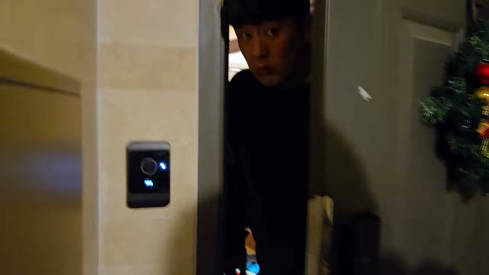
또한 “지출이 뭐 늘지 줄어요? 돈 벌어서”라며, 소득이 생겨도 지출은 줄지 않고 오히려 따라 늘어난다는 현실을 지적한다. 돈을 벌면 “벤츠 살 거예요”라는 반응이 나오고, 이에 “오케이, 모아 봐, 절대 그거 안 사”라는 대화가 오간다. 이 짧은 주고받음은 소비 욕구와 저축 의지가 어떻게 충돌하는지를 압축적으로 보여준다.
2. 술자리 오프닝: “또 부자 이야기를 들으러 왔다”
영상은 한강이 보이는 고급스러운 공간에서 진행된다. “또 어마어마한 부자의 이야기를 또 들어 보러 우리가 오지 않았겠냐”는 말과 “저기 한강도 보이던데, 어마어마해 보이지, 여기 비싼데”라는 대화가 오간다. “매일 쟤는 아파트에 미쳐 가지고”라며 부동산에 집착하는 인물을 언급하고, “이런 애를 만나야 된다”는 농담 섞인 평가가 나온다. 대리석과 벽돌 이야기, “중요한 게 빨리 와”라는 재촉이 이어지며 양지 대표가 도착한다.
양지 대표가 합류한 뒤에는 술에 대한 이야기가 나온다. “이럴 때 비싼 데서 먹으면 한 80만 원 하나?”라는 질문에 “이거 되게 싼 거예요, 구할 수 없는 아이템”이라고 답한다. 일본 여행에서 구한 옛 술로, “금색 뚜껑은 거의 없고 단종이 된 거”라며 희소성을 강조한다. “옛날 술이 맛있잖아요, 되게 부드러워요”라며 첫 잔은 원샷으로 시작한다. 이 장면은 본격적인 대화 전 분위기를 풀어주는 역할을 하지만, 동시에 ‘희소한 것을 알아보는 안목’과 ‘비싼 것의 가치를 판단하는 감각’이라는 이후 주제의 복선으로도 읽힌다.
3. 5년 만의 1억: 아르바이트가 아르바이트로 끝나지 않으려면
대화는 본격적인 성공담으로 넘어간다. “네가 아르바이트를 그때 당시에 했단 말이야, 50억 번 거지? 5년 만에”라며 “1억 모았다는 게 어떻게 5년 만에 1억 모으냐”는 질문이 나온다. 이에 대해 “아르바이트를 처음에는 시작하지만 이 아르바이트가 계속 아르바이트가 아니야, 이제 정직원도 되고 매니저도 되고 팀장도 되고”라며 직책과 역할이 확장되는 과정을 설명한다. 단순한 시급 노동에 머무르지 않고 조직 내에서 위치를 바꿔가는 것이 핵심이다.
그러나 현실은 녹록지 않다. “몇 달 일했는데 통장에 돈이 하나도 없는 거예요”라는 고백이 나오고, “맨 여자 만났을 때 또 썼겠지”라는 농담이 이어진다. 웃음으로 넘기지만, 그 이면에는 열심히 일해도 남는 것이 없다는 자괴감이 깔려 있다. “열심히 일했는데 돈이 없다면 앞으로도 돈이 없겠네? 이런 생각을 한 거예요, 그럴 바에는 돈이 없으면 그냥 집에서 놀고 먹지, 일은 또 왜 하는 거야?”라는 회의가 이어진다. 그럼에도 “일은 계속 했잖아요”라며 현실을 인정하고, “뭐 한다고 이거 셋바지게 일하고”라며 자책한다.
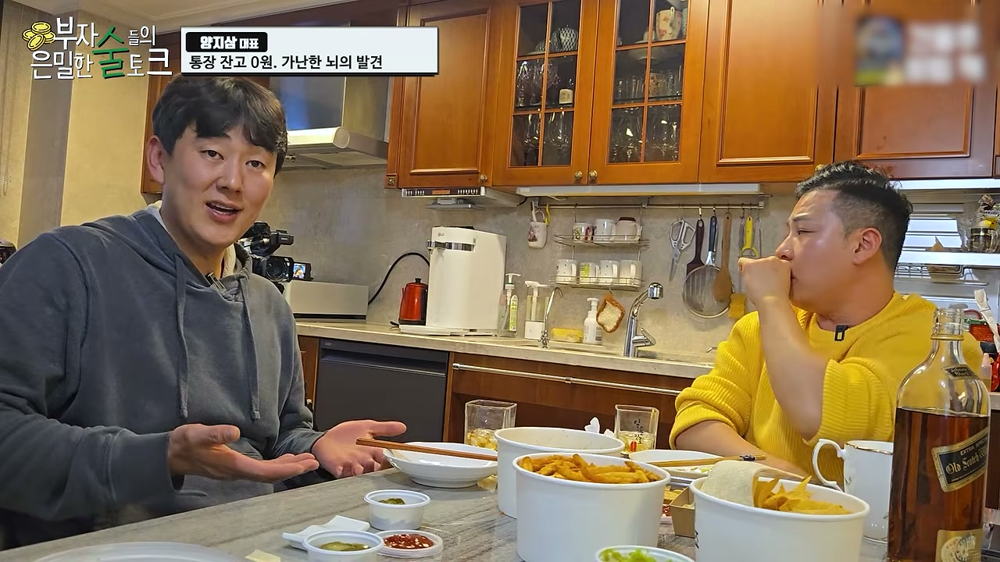
이 자책이 행동으로 이어진 것이 3개월 동안의 소비 기록이다. “다 적어 봤어요, 3개월 동안, 그건 어디다 쓰는지”라며 모든 지출을 적었다는 것이다. 이는 막연한 절약이 아니라 데이터에 기반한 자기 진단의 시작이다.
4. 3개월 가계부가 드러낸 것: 작은 구멍들의 합
가계부에 적힌 항목은 구체적이다. “담배 사 피는 게 뭐 한 10 얼마”였고, “그 당시 담배 폈어, 지금 안 피지만”이라고 회고한다. 담배를 사면서 집는 “바나나 우유 하나, 과자 몇 개”가 “담배 값보다 더 나와”라는 발견이 이어진다. 하나하나는 사소하지만, 반복되면 담배 값보다 큰 지출이 된다는 것이다. 여기에 “휴대폰 값”, “좀 불안전한 세상에서 하니까 변액 보험, 보장성 보험 하나 들고”, “엄마 용돈도 좀 드리고, 옷도 좀 사고, 휴대폰 값 내고, 카드 값 조금 내고”가 더해진다.
이 항목들을 종합하면 “이러면 돈이 없어”라는 결론에 도달한다. 각각은 합리적이거나 불가피해 보이는 지출이지만, 전체를 보면 소득을 모두 소진하는 구조다. 그래서 “한참 생각을 했어요, 어떻게 하면 돈을 모을 수 있을까?”라는 고민이 시작된다. 이 고민은 이후 “그때 그 생각을 잘 했던 거 같다”고 회고될 만큼 중요한 전환점이 된다. 즉, 가계부는 단순한 절약 도구가 아니라 소비의 구조를 인식하게 만든 장치였다.
5. 25살의 가설: “나는 거지고, 내 생각은 거지의 생각이다”
“제가 그때 25살 애가 돈도 없잖아요, 몇 백만 원 있는데”라며 당시 상황을 설명한다. “양극화에서 말할게요, 부잡니까? 거지잖아요”라며 스스로를 거지로 규정한다. 그리고 “나는 거지고, 내가 하는 생각은 거지의 생각이야, 백날 생각해 봤자 거지 생각은 벗어날 수 없을 거야”라는 가설을 세운다. 이는 자기 비하가 아니라 사고의 한계를 명확히 인식하는 메타인지적 발상이다.
“나의 반대말이 부자잖아요, 어떻게 하면 내가 하는 말의 반대 말의 행동을 할까에 대한 고민을 한 거야”라는 설명이 이어진다. 이때 진행자가 “야, 어떻게 하다가 갑자기 그래, 메타인지가?”라고 묻자 “아, 그게 메타인지 아닌지도 모르고 인정을 했어요”라고 답한다. 즉, 전문 용어로 정리된 개념이 아니라 절박함에서 자연스럽게 도출된 사고법이었다는 것이다.
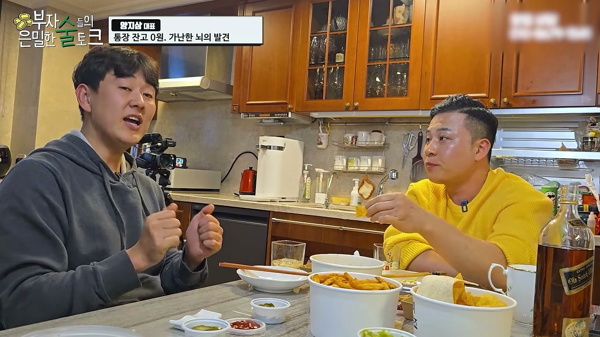
구체적인 예가 이어진다. “아, 돈 아껴 쓰자, 그건 이미 돈 없는 사람의 생각인 거야”라며 “이 부자의 생각은 뭘까? 돈 아껴 쓰자, 돈 열심히 모으자의 반대 말은 뭘까”를 고민한다. 여기서 “왜 나는 돈을 썼나를 생각을 해 봤어요, 돈을 쓸 시간이 있었던 거야”라는 통찰이 나온다. 결국 “돈을 아껴 쓰자, 모으자”의 반대말은 “돈 쓸 시간을 없애 버리자”라는 결론에 도달한다.
6. “돈 쓸 시간을 없애라”: 새벽 일과 낮 일을 겹치다
“그럼 어떻게 하면 돈 쓸 시간을 없앨까?”라는 질문에서 구체적 실행이 나온다. “식당이 거의 새벽에 문 닫았으니까 낮에 일을 또 하자”라며 “낮에 일을 또 한 이유가 돈 쓸 시간을 없애기 위해서”라고 설명한다. 즉, 추가 소득을 위해서만이 아니라 소비할 시간 자체를 차단하기 위한 전략이었다.
구체적으로 “10시 반에 패밀리 레스토랑에 오픈조를 했어요, 그 한 3시부터 또 했어요, 조개구이집 일을 하고”라며 하루에 여러 직장을 겹쳐 일했다. 이는 앞서 나온 “양적 확장”의 실제 모습이다. 시간과 체력을 한계까지 쥐어짜는 방식으로 돈을 모으는 구조를 만들었다. 그러나 이 방식은 이후 몸이 상하고 계산대에서 잠이 드는 사건으로 이어지며 한계를 드러낸다.
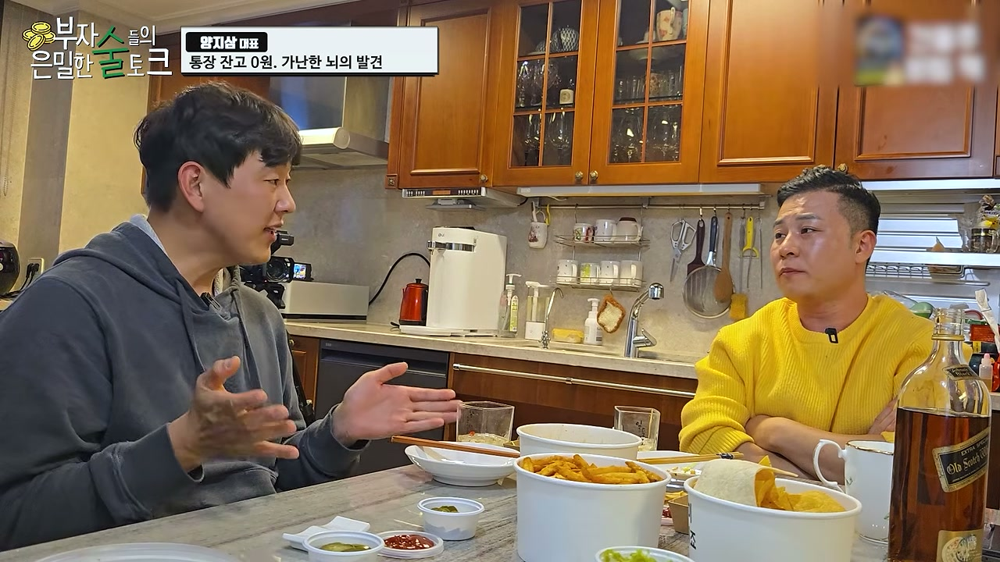
“1년을 하니까 형님 카드를 받아서 ‘아 예 계산해 드리겠습니다’ 하고 긁는 그 순간에 잠이 들더라고요”라는 일화가 나온다. 조개구이집에서 “조개를 구우면 힘들게 살짝 기댄단 말이야, 그 순간에 그냥 탁 졸아”라며 당시의 피로를 생생하게 전한다. 이 장면은 ‘돈 쓸 시간을 없애는’ 전략이 얼마나 극단적인지 보여주는 동시에, 지속 가능한 방식인지에 대한 의문을 던진다.
7. 양적 확장의 한계와 질적 성장
“그 생활을 1년을 하니까 몸이 너무 상하는 거야, 그 창창한 나이에”라며 건강이 무너졌음을 고백한다. “지금 술 먹으면 안 상할까요 몸이?”라는 농담이 오가지만, 본질은 “이렇게 계속 느껴야 된다고, 인생 바뀌려면”이라는 깨달음이다. 여기서 첫 번째 결론이 나온다. “첫 번째는 부자의 생각을 하자.” 그리고 두 번째 결론은 “내가 지금 한 것은 단순한 시간과 나의 체력을 바꾼 양적 확장을 한 거밖에 안 된다”는 자기 평가다.
그래서 “질적인 성장을 해야 된다”, “한번 더 스텝업을 했어”, “질적인 성장을 해야지 살아남지, 이 짓거리 계속 하다가가는 제명에 못 산다”는 결론에 이른다. “나 진짜 매장에서 홀 서빙 하다가 쓰러지고 그랬었거든요”라는 경험은 이 주장을 뒷받침한다. “너네들은 뼈 타고도 크더라고, 등치가 좀 크냐고”라며 “어 하다가 버티려다가 쓰러지면 더 크게 쓰러지는 거 아시죠? 가다가 팍 쓰러지면 이렇게 꼬꾸라지는데, 안 쓰러지면 버티다가 쓰러져야지, 싹 기울면서 이렇게 쓰러진단 말이야, 그러니까 더 막 난리가 난 거야”라는 비유가 이어진다. 큰 사람이 버티다 쓰러지면 더 크게 다친다는 것이다.
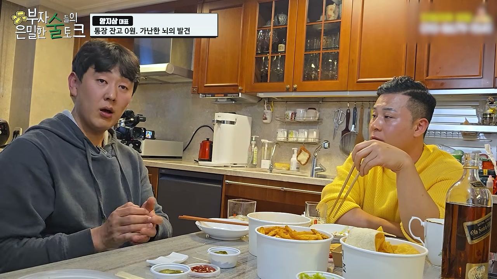
이후 “질적인 성장을 해야겠다, 사장보다 더 사장 같은 사람이 돼야지”라는 목표가 제시된다. 단순히 돈을 조금 모으는 것이 아니라, 사장의 사고와 역할을 체화해야 한다는 것이다.
8. 고향 집, 엄마의 택시, 잔디밭의 눈물
돈을 조금 모아 고향에 내려간 날의 이야기가 이어진다. 친구들을 만나 밥을 먹고 올라오는데, “그날 따라 엄마가 굳이 택시를 불러준대”라며 “가슴이 또 뭔가 미워져”라고 표현한다. “엄마 뭔 택시야, 젊은 애가 가서 버스 타고 갈게”라며 운동장을 가로질러 가는데, “나또래 애들이 축구를 하는 그 장면이 왜 이렇게 슬픈지, 저 친구들은 저렇게 해맑게”라는 장면이 떠오른다. 이는 자신만 다른 길을 걷고 있다는 소외감과, 그럼에도 성공해야 한다는 압박이 교차하는 순간이다.
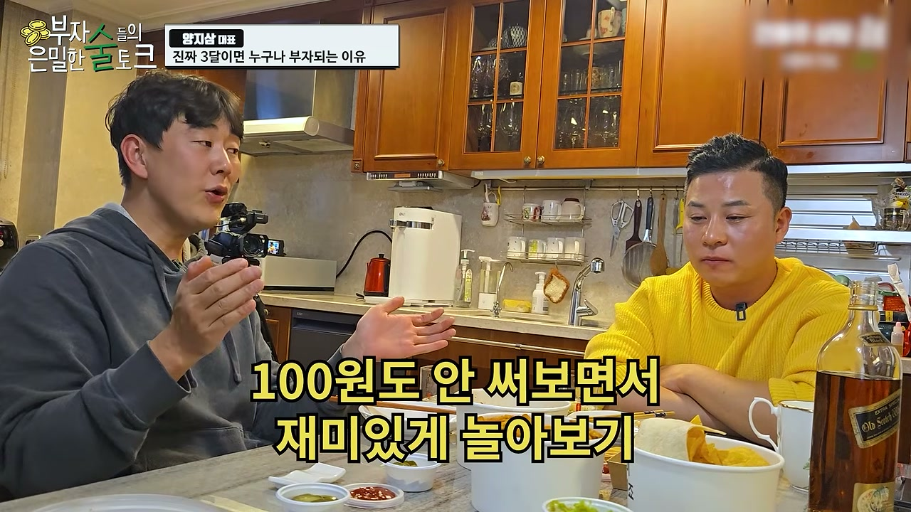
“천에 한 명 나올까 말까 한 알바다”라며 “이렇게 나약한 표정을 하고 일을 했지만 나약한 자아가 있잖아요, 나약한 내 자신이 있잖아”라고 고백한다. 그 나약함을 “어떻게 하면 티를 안 내고 뭔가 털고 올라와서 내가 이거 한번 해볼 거야라는 그런 자아가 또 생기잖아, 이중자아가 생기잖아요”라며 “근데 나약한 자아가 사라지진 않는 거야”라고 덧붙인다. 이중자아는 완전히 사라지지 않지만, 그 위에 새로운 자아를 쌓아 올리는 방식으로 성장한다는 것이다.
“햇빛이 쨍쨍한 날에 엄마가 택시 불러준다는 그 말을 듣고 가슴도 좀 찡했지, 내가 진짜 거기에 잔디밭에 앉아서 엉엉 울었다니까”라는 장면은 영상에서 가장 감정적인 대목이다. 이 눈물은 좌절이 아니라 결의의 순간으로 기능한다.
9. “한 달에 90~100만 원을 썼다”: 돈을 못 버는 진짜 이유
“한 달에 그리고 또 90만 원, 100만 원 썼어요, 식당 일하면”이라는 고백이 이어진다. “사장이 돈 쓸 시간이 없잖아요, 맨날 일하는데”라며 아이러니를 짚는다. 그러면서 “내가 돈 있냐? 돈 없대, 직원한테 우리 5년 차야, 돈 있냐? 돈 없대”라는 대화를 소개한다. 5년 차 직원조차 돈이 없다는 것은 개인의 의지 문제가 아니라 구조의 문제다.
“정답은 딱 하나예요, 왜 그 친구는 돈을 못 버냐?”라는 질문에 “요새 식당에서 정직원 일하면 다 2 300만 원 벌어요, 300 이상 벌어요, 뭘 해도 충분히 벌 수 있어”라고 답한다. 즉, 소득 자체는 충분히 벌 수 있다는 것이다. 문제는 “근데 돈 쓸 시간이 너무 많아”라는 지적이다. “욜로, 워라밸”이라는 말로 대표되는 여가 지향과 “몇 시간 이상 일을 하면 안 돼”라는 규제가 맞물려 “뭔가 다른 장치를 해서라도 돈 쓸 수 있는 구멍을 다 막아야 돼, 우리도 다 나가면 다 돈 쓸 구멍이잖아”라는 결론에 이른다.
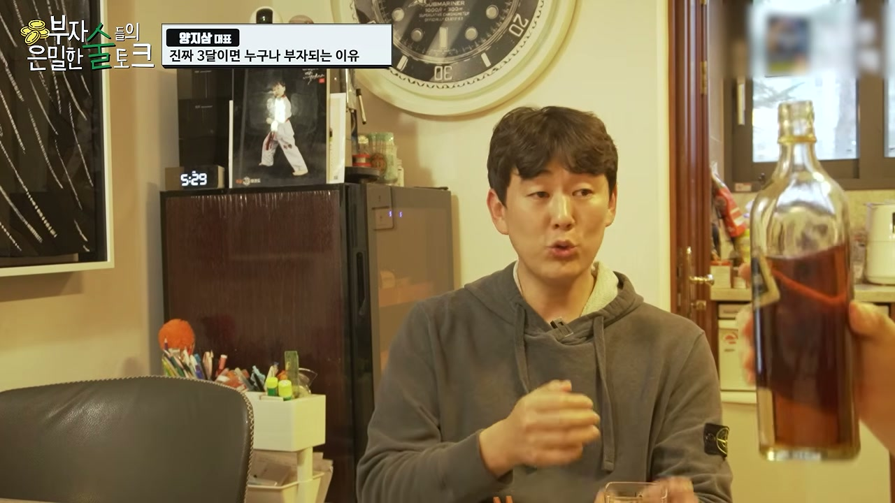
“이 새끼 반지하 살면서 얘가 이제 구멍을 구멍이라 하잖아, 전라도가 살아있어, 너가 있다니까”라는 농담은 다소 과격하지만, 소비의 구멍을 메우는 것만으로는 근본적 해결이 어렵다는 뉘앙스를 준다. 이어서 “100만 원을 벌어서 150만 원을 모으겠다, 180만 원을 모으겠다, 근데 내가 지금까지 그렇게 못 해 왔어라고 하는 사람들은 그거를 자기의 저축량을 늘려가겠다, 이러면은 그것 또한 가난한 사람의 생각이에요”라며 저축률 높이기의 한계를 다시 강조한다.
10. 역설적 전략: 지출을 늘리려면 지출이 0이어야 한다
“일반 일차원적인 생각이야, 지출을 늘려가겠다”라며 “지출을 줄여가겠다의 반대말은 지출을 늘려가겠다잖아, 그러면 지출을 늘려가겠다의 필요 조건은 뭐예요?”라고 질문한다. 답은 “지출이 0이어야 되는 거야”다. “지출이 0이어야지 내가 늘려가면서 살 수 있는 거거든요”라며 “그러니까 한 번은 나의 라이프스타일을 완전 한번 막아야 돼, 그다음에 내가 지출을 늘려야겠다는 생각을 하잖아요?”라고 설명한다.
“한 달에 30만 원 쓰기 힘들어요”라는 말에 “포기할 줄도 알아야 된다”고 답한다. “아예 딱 몇 달만 내 인생에서, 진짜 3개월만 돈을 한번”이라며 “우리 바프도 많이 찍잖아요, 바프도 음식 진짜 닭가슴살만 먹기 얼마나 힘들어, 재물에도 많이 하잖아요”라고 비유한다. 여기서 “바프”는 바디프로필의 줄임말로, “바디프로필 찍고 주제 넘는 하지 마”라는 농담이 오간다. 즉, 지출도 바디프로필처럼 기간을 정한 극단적 프로젝트로 접근하라는 것이다.
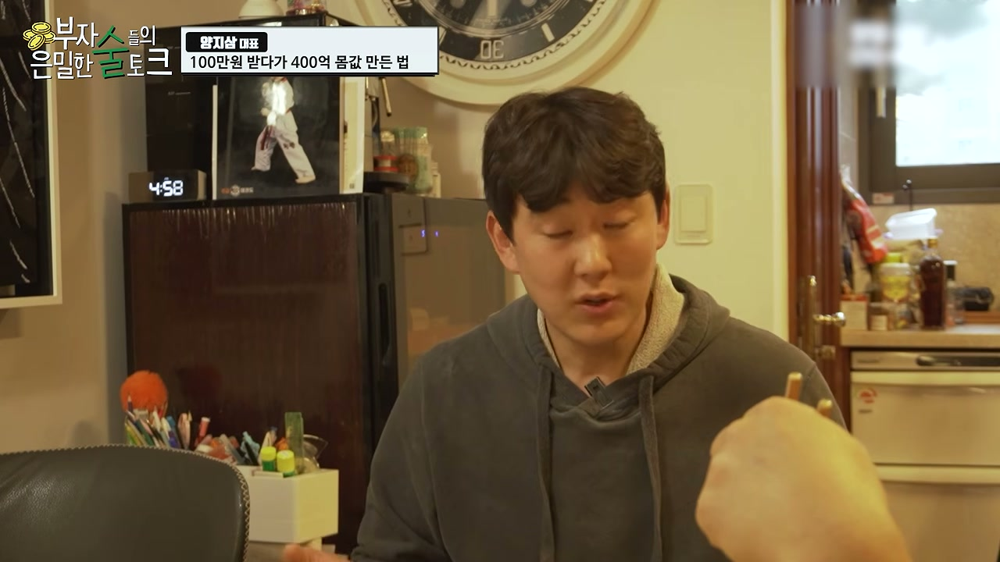
구체적으로 “지출에서도 한번 100일 프로젝트를 해야 돼, 100일 동안 100원도 안 써 보기, 100원도 안 써 보면서 재밌게 놀아 보기, 이런 거 한번 해 봐야 돼, 그러고 나서 다음에 내가 지출을 늘려보겠다”라고 제안한다. “30만 원 쓰는 것도 엄청 일이에요, 왜냐면 습관이 완전 바뀌어”라며 “야, 이게 얘 어려워, 그리 나이 많지 않아, 꼰대, 꼰대가 얘기 아니라 성공은 이렇게 고전이잖아, 조금씩 조금씩 녹아나는 거는 우리가 못 느껴, 그리고 이걸 막을 수가 없어요”라고 덧붙인다.
핵심은 “지출이 뭐 늘지 줄어요? 우리가 살면서 지출 한 번도 안 줄어요, 계속 늘지, 근데 그거를 한 번씩은 딱 끊어서 원점을 한번 만들어 봐”라는 것이다. “만들어 보고 나서 그 다음에 하고 싶은 게 뭐지? 100일 동안 내가 돈을 안 써 보니까 정말 이건 하고 싶더라, 혹은 정말 이걸 먹고 싶더라, 아무 없이 그때 써도 돼요”라며 소비의 우선순위를 재설정하는 효과를 강조한다.
11. ETF와 벤츠: 유동성을 덩어리로 만드는 법
“미국 추종 인덱스라든지 차라리 ETF를 들어, 그리고 계속 얘를 사 줘라 하니까 열 주씩 열 주씩”이라는 조언이 나온다. “너 돈 왜 모으냐? 돈 벌어서 저는 왜 벤츠 살 거예요, 그냥 오케이, 좋아, 모아 봐”라며 “자기 돈 모으잖아요? 절대 안 사, 절대 안 사 그거”라고 강조한다. 이는 소비 욕구를 부정하는 것이 아니라, 그 욕구를 저축과 투자의 동력으로 전환하라는 의미로 읽힌다.
“나도 나도 그래서 진짜 실제로 내 눈물 콧물 진짜 내 자존심의 돈이거든”이라는 말은 이 자산이 단순한 금액이 아니라 자존심과 고생의 결정체라는 점을 보여준다. 이어서 “직장인들 그거 BMW 이거 꼭 타고 다니시는 분들”을 언급하며 “자기가 돈을 모을 돈을 그냥 이 유동성을 하나의 어떤 덩어리로 만들지 않고 그냥 계속 회전을 시키는 거지”라고 지적한다. 즉, 번 돈을 자산이라는 덩어리로 축적하지 않고 소비재로 계속 회전시키는 행태를 비판하는 것이다.
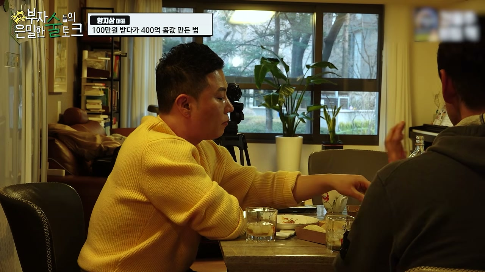
여기에 “사람도 감가상각이 있잖아요, 내 몸도 감가상각이 있어요, 우리가 40 넘어가면 늙잖아요, 그러니까 우리는 영원할 수 없어요”라는 관점이 더해진다. “그러니까 지금 당장 내가 돈을 버는 것은 내가 60살 때 버는 것까지 같이 버는 거예요, 이 돈도 같은 돈이야”라는 표현은 현재 소득의 시간적 가치를 강조한다. 지금 소비하는 돈은 미래의 소득까지 당겨 쓰는 것일 수 있다는 경고다.
12. 주변 언어와 ‘때 먹이는’ 2~30%: 환경이 사고를 만든다
“요즘 애들 내가 만나 보니까 애들이 모두 다 피해, 힘드니까”라며 세대 분위기를 언급한다. 이어서 “100에 50 이상은 때가 잘 타요, 세탁소야?”라는 농담이 나오는데, 이는 사람이 주변 영향에 쉽게 물든다는 비유다. “좋은 영향을 주면 좋은 쪽으로, 안 좋은 영향을 주면 안 좋은 쪽으로”라는 설명이 이어진다.
“그중에 50을 제외한 나머지 50 중에서 안 좋은 애들이 한 2, 30 있는 거야, 이 2, 30 애들이 얘들을 이제 때를 먹이는 거예요”라며 구체적인 언어가 소개된다. “야, 열심히 일하지 마”, “다 사장이 좋은 일 시키는 거야”, “돈 더 주는 것도 아닌데”, “돈 벌어서 다 지가 가져가는 거야”, “너 지각하지 마” 등이 그것이다. 반면 “오늘 너 지각했으니까 내일은 지각하지 마”에 “내일은 내가 지각해야 되니까”라고 답하는 식의 언어도 등장한다. “어, 그렇게 얘기할 수도 있는 거지”라며 “우리의 언어하고 좀 질나쁜 2, 30%의 대화의 언어는 완전 다른 거지”라고 정리한다.
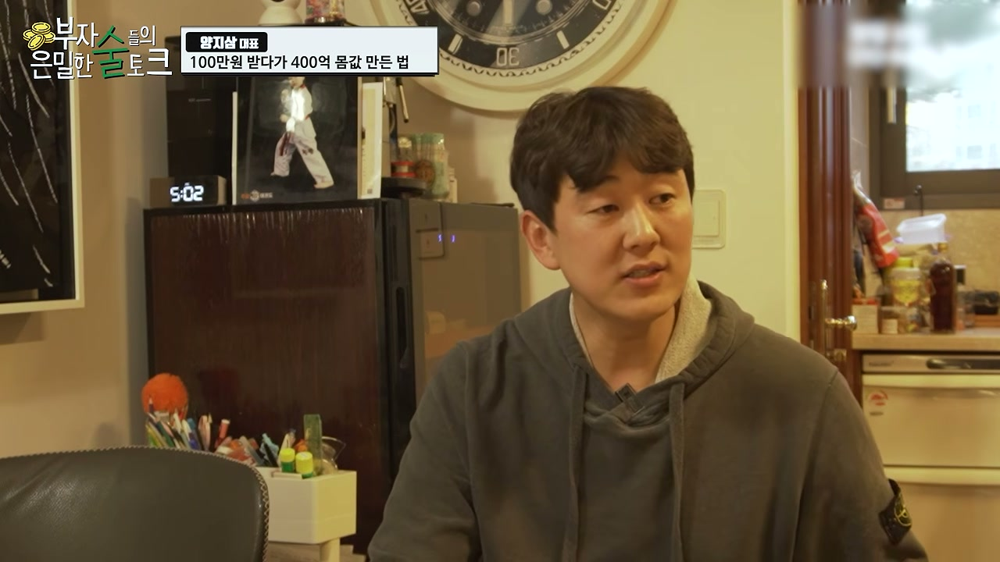
“자기는 그렇게 안 하실 수 있으니까 그렇게 말 하시는”이라는 지적에 “저요? 저는 사실 천에 하나 나올까 말까 한 알바생이죠”라고 답한다. “누가 그 천에 한 명, 왜냐면 천에 한 명, 연수에서 올라온 놈 얘 밖에 없거든”이라며 자신이 특별해서가 아니라 환경과 태도가 달랐음을 강조한다.
13. 지루함을 이기는 법: “오늘 온 손님을 어떻게 다시 오게 할까”
“일이 얼마나 지겹습니까? 식당 일이, 오늘 한 일 내일 또 해야 되지, 그것도 내일 또 해야 되지, 너무 좀 지겹잖아요”라며 “3개월, 6개월, 9개월마다 그만두고 싶은 욕구 막 생긴단 말이에요”라고 고백한다. “그렇다 보니까 내가 이 일을 또 그만두고 딴 데 간들 뭐 이 지루함이 없어져? 그렇지 않잖아요”라며 “좀 나를 인정해 주는 이곳에서 그냥 내 공로를 쌓아야지”라는 결론에 이른다.
“일을 오래 하긴 할 건데 어떻게 하면 이거를 이 지루함을 이길 수 있을까?”라는 질문에 “동네 형아가 얘기해 주네”라며 “이 일을 그나마 좀 더 하기 위해서는 우리가 이런 힘을 내야 돼, 이 좁은 공간에서 똑같은 일하면서 똑같은 말하면서 우리가 하루라도 더 하려면 아 지겹게 해야지? 어떻게 하면 지겹게 할까?”라고 반문한다. 이어서 “저는 어떻게 생각하는 줄 아세요? 오늘 온 손님을 어떻게 다시 오게 할 수 있을까? 이런 생각을 하다가”라는 답이 나온다.
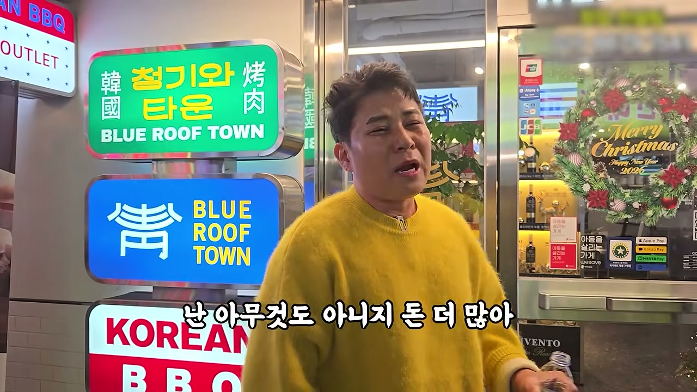
“알바가? 에이, 거짓말”이라는 반응에 “천에 하나 나올까 말까 한 알바라니까요, 제가, 그 생각을 하다가 아니야, 이것도 부족해, 오늘 온 사람을 어떻게 오늘 한번 녹게 할 수 있을까? 에이, 이 생각까지 했다니까”라고 덧붙인다. 즉, 재방문을 넘어 당일의 경험을 즐겁게 만드는 것까지 사고를 확장했다는 것이다.
14. 친절의 거리감과 보호 영역 침투
“와, 이건 좀 세다, 나 이런 얘기 처음 들어 봤거든, 똑같은 알바의 결인데 이렇게 쓰니까 달랐거든, 도대체 어떤 마인드로 네가 했던 거야?”라는 질문이 이어진다. 이에 “내가 너무 여기에 잘해 주고 싶다고 해도 가서 뭐 어이 뭐 서비스 드릴까요? 무슨 뭐 제가 이거 뭐 해 드릴까요? 이러면은 사람들이 거부감이 생기잖아요”라며 “사람의 그 거리감이라는 게 있잖아요”라고 설명한다.
“우리 형님하고 친하지만 내가 형님의 코 앞에 가서 이렇게 얘기를 한다, 그럼 얼마나 그 사람이 이렇게 움츠리게 해요”라며 “근데 친절이란 것도 그런 거거든요, 너무 그 사람의 보호막 안까지 들어가서 이거 뭐 제가 이거 다 해 드릴게요 이러면은 거부감이 들어요”라고 덧붙인다. 그래서 “알게 모르게 이 사람의 그 보호 영역을 침투하는 훈련을 해야 돼”라는 표현이 나온다. “이라크 파병 출신 맞네, 가서 봉사 활동한 게 아니야”라는 농담은 이 훈련이 얼마나 치밀한지 보여준다.
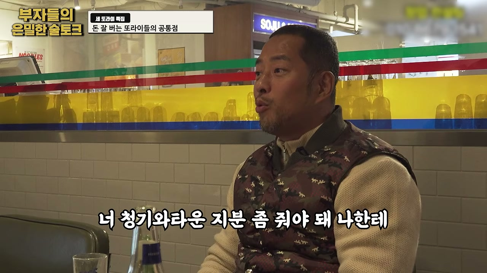
구체적인 실천법도 제시된다. “괜히 막 휴지로 지나가면서 손님들을 한 시간 반, 한 시간 40분 식사하잖아요, 그럼 얼마나 그 불필요한 요소가 식당 테이블에 많습니까? 뭐 휴지도 많고”라며 “그러면은 무심하게 왔다 갔다 하면서 이거 좀 치워 드릴게요 하면서 얼른 빠지는 거야”라고 설명한다. “좀 뭔가 드리번 드리번 하면은 그 사람이 뭘 찾겠어요, 아 술 아니면 물 아니야”라며 “그러면은 얼른 뭐 갑자기 물을 준다거나 갑자기 술 이거 드시나요? 소주가 이 술 아니면 저 술 아니에요, 소주 하나 주세요 그러면 얘 두 개 가져가, 그래서 이거요? 아 이거 말고 저거요? 그러면 아 이거요? 이러면 얼마나 좋아해”라는 장면이 이어진다. 손님이 말하기 전에 눈치껏 원하는 것을 가져다주는 것이 핵심이다.
15. 센스의 순간: 멘트 연구가 아니라 타이밍
“아 그런 것들을 해요, 이거 뻥 아닌데? 아니 소주를 주머니에다 넣어 갖고”라는 반응이 나온다. 이에 “내가 이 사람을 기쁘게 하기 위해서 정말 뭐 이렇게 멘트를 막 연구를 해서 말을 하면 오히려 거부감만”이라며 “그러니까 친절은 아주 짧은 순간에 일어날 수 있어요, 한번 아 여기 참 센스 있네, 그러면 이 술자리가 얼마나 재밌어지겠어요”라고 설명한다.
“이렇게 하는 식당과 그렇게 하지 않는 식당”의 차이로 이어진다. “예를 들어서 우리가 1차 먹고 2차가 또 3차가 갈 때가 좀 애매한 거 같아, 그러면 야 우리 아까 거기 가서 그냥 산낙지 하나 시켜서 소주 한 병 먹고 가자”라고 제안하면 “그날 온다니깐요, 그날 와요, 실제로 이렇게 있었던 일이에요, 아 그런 것들이 진짜 엄청 많죠”라고 말한다. 즉, 센스는 거창한 이벤트가 아니라 상황을 읽고 먼저 제안하는 짧은 순간에 발생한다.
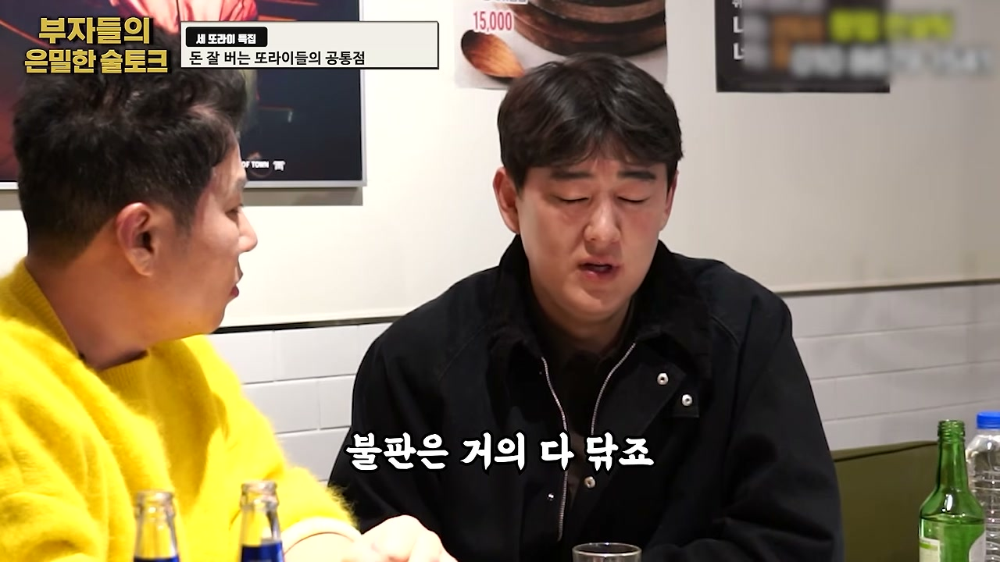
“그 알바생이 그런다고 그 사장이 알아주나요 그러면?”이라는 질문에는 “모든 거는 다 그 만의 향이 다 난다고 저는 생각하거든요”라고 답한다. “형이 알게 모르게 착한 짓을 하는 거, 사람들한테 선한 영향력을 끼치는 거, 형이 유튜브를 하건 안 하건 간에 그건 다 알게 돼 있어요, 반대로 형이 누군가 나쁜 짓을 막 해코지를 한다, 다 알아요”라며 행동의 결과가 반드시 드러난다는 믿음을 표현한다.
16. 선한 영향력은 숨길 수 없다: 사장의 지인과 명함
“내가 열심히 일을 한다, 손님 중에 사장님 지인이 없겠어요? 100% 있단 말이에요, 장사하는 사람이 없겠어요?”라며 “그럼 나를 안 데리고 가고 싶겠어요?”라고 반문한다. 이어서 “한 달에 얼마 받냐? 뭐 얼마 받습니다, 얼마 받아서 와”라며 “팀장이 보거나 뭘 보거나 명함을 주고 이런 모습들이 보이면은 월급을 누가 올려 줄까 혹은 뭐 누구를 승진시킬까 하면 대번에 내가 나오지”라고 설명한다.
“그리고 우리 사장님 친구들도 다 장사하는 사람인데 야 너 걔는 어디서 구해왔냐? 이런 얘기 대곤 나오죠, 이거는 숨기려고 해도 숨길 수가 없어요”라는 말이 이어진다. 결국 평판과 태도는 조직 내에서 반드시 관찰되고 평가된다는 것이다. “성공한 사람들의 특징들 다 닮아 있거든, 이게 형이랑 네가 닮은 게 있거든, 나도 너도 그랬지, 어렸을 때도 일할 때 똘방똘방 일 잘한다고 너 서로 데려가려고 했지”라며 어린 시절부터의 태도가 성공의 공통 특징과 연결된다.
“저는 사실은 요만큼만 일을 해도 좀 많이 한 것처럼 보여, 키가 크잖아 일단은, 등치가 크잖아”라며 “키가 몇 씨? 190이요, 191? 예, 형보다 3cm 크니까”라는 대화가 오간다. “일 잘하는데 또 얼굴 원래 닮아 있지도 않아 또, 얼마나 이뻐요”라며 외모와 인상도 평가에 영향을 준다는 농담이 이어진다.
17. ‘또라이’의 재정의: 미쳐 본 사람들
“우리 명언 있어 우리 집, 우리는 오른손이 한 일을 원래 모르게 하잖아요, 알게 엄청나게 해버리지”라는 말이 나온다. 이어서 “여기 청기와 타운 유명한 고깃집이야”라며 장소가 바뀐다. “오늘 여기도 근데 누구 만나요? 미친놈들, 야 완전 또라이들 모임이야, 나 개 또라이들 이런 상또라이들을 내가 술 토크를 할 줄 몰랐어, 난 아무것도 아니지, 돈 더 많아”라는 대화가 이어진다.
“우리가 지금 또라이 특집이거든요 형님, 그래서 저희들이 공통점이 있잖아요, 사업 소득 다 시키고 또 자산 소득도 만들어보고 그래서 또 외식업에 지금 잡뼈가 굵잖아 형님”이라며 공통점을 정리한다. “제가 또라이 왜 제가 이제 또라이로 같이 나온 거죠?”라는 질문에 “나는 너도 또라이”라며 “근데 우리는 우리 일에 정말 내가 모든 걸 걸고 미쳐 봤던 사람이”라고 답한다. “라고 그걸 또라이라고 표현했다고 생각을 합시다, 그걸 정의해요”라며 “이상 또라이가 아니라”라고 덧붙인다.
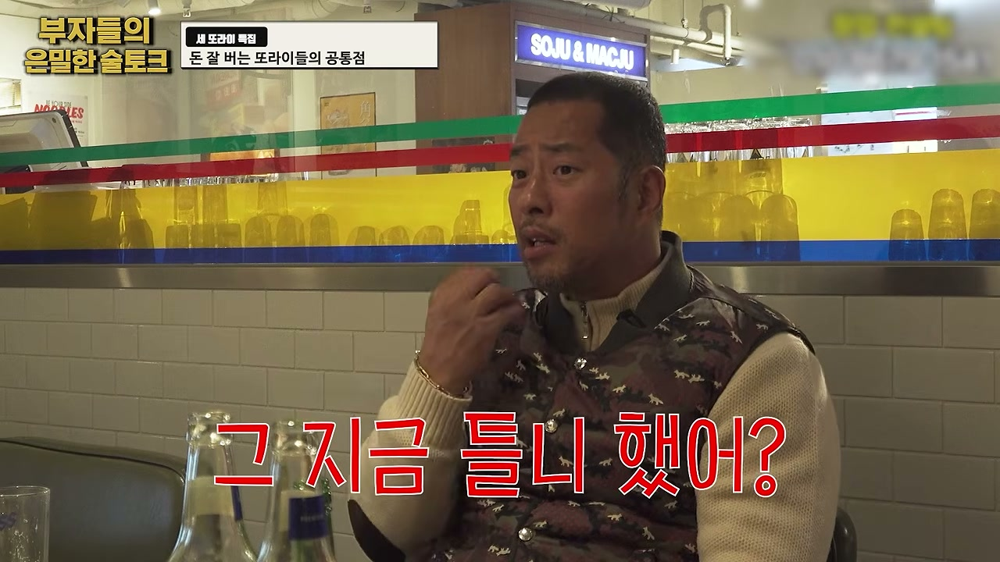
“아 그럼요, 평범하면 여기까지 못 와요, 그래서 난 또라이가 돼야 된다고 생각해”라는 말은 ‘또라이’를 부정적 의미가 아니라 일에 미쳐 본 몰입의 정도로 재정의한다. “그럼 와이프가 나한테 또라이 라고 하는 것도 어떻게 보면 칭찬인거네?” “아 칭찬이야 그거는” “그럼” “아니 그 와이프가 하는 거는 그 진짜 또라이였어, 왜냐면 와이프의 관점은 그걸 모르실 거야 아마, 우리가 생각하는 그 또라이가 뭔지 모르실 거야”라는 대화로 이어진다.
18. 호박 식당 벤치마킹과 “청계 집은 줘야 돼”
“형 주위에 사람 많더라고, 형이 워낙 또 사업을 오래 하셨고” “뭐 그렇게 밖에 표현할 수가 없나, 오래 해서 많은 건가 아니면 형이 뭔가 괜찮아서 많은 건가” “지금 가고 있잖아요, 가고 있는데 브레이크를 잡아놓고”라는 대화가 오간다. 이어서 “나는 형의 전설을 옛날부터 듣기만 했지, 형이 그 호박 식당, 호박 식당 너 가봤니 너는 혹시?”라는 질문이 나온다.
“저는 저기를 벤치마킹을 많이 갔던 사람이에요, 나는 형한테 이 형의 부를 이루는데 한 몫 했어요”라는 말에 “아니 야야 그게 아니라 네가 벤치마킹을 했으면은 네가 잘 되는데 내가 눅스 한 거 아니야? 팔아줬잖아 많이” “아이 야 팔아주긴 야야 네가 습득해서 네가 잘한 거지만 청계 집은 좀 줘야 돼 나한테” “청계 갔다 옴? 어” “호박 벤치마킹해서 잘 됐으면 집은 좀 주세요”라는 농담이 이어진다. 이는 벤치마킹의 가치와, 배움을 실행으로 옮긴 사람의 몫을 강조하는 장면이다.
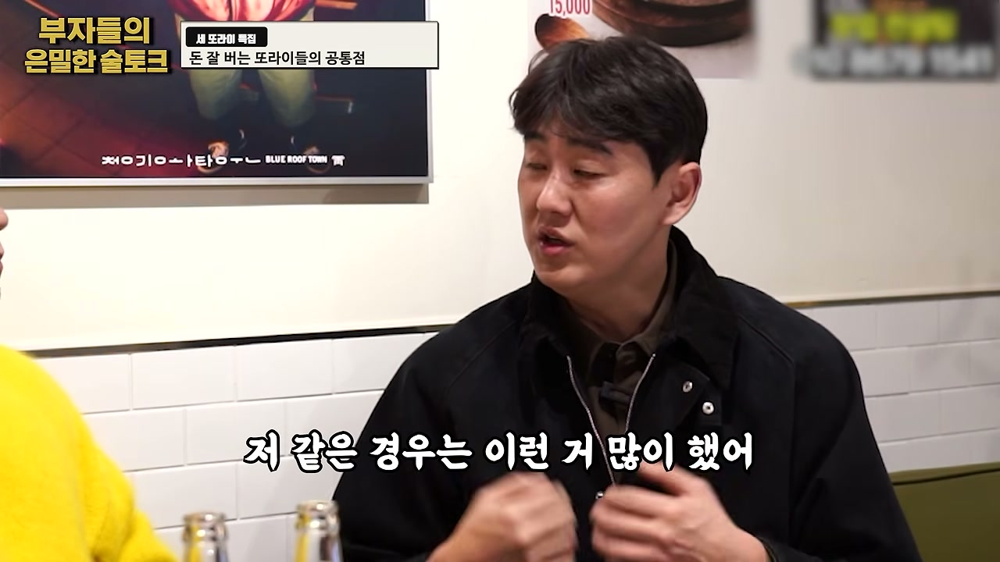
“충격적인 게 형이 엄청 찌질하게 가난했더라고” “그래 뽀대가 나잖아 금수저 전력과 다” “이렇게 고급지게 생겼다, 형은 원래 뭐 잘생겼으니까 부자일 거라고 다 상상을 해” “이 키는 150이니까 이제 형이” “누가? 키 쓴 거 아니야? 나 살아서 나가는 거냐 벤치마킹? 옛날 생각 제가 나려고 그러네” “그만 얘기해라 형들, 안 되겠다”라는 대화가 이어진다. 이어서 “월급 160에 13시간이었어, 와 그때는 형 그랬어, 일주일에 한 번씩 오”라며 과거의 열악한 근무 조건이 공개된다.
19. 불판 닦기의 기술: 400장과 쇠솔 4~5개
“예를 들어서 이거 이제 이게 들어와 불판으로, 배고파, 그럼 이거 먹게 돼 안 먹게 돼? 먹어봤지?”라며 불판 청소 경험이 화제가 된다. “우리 불판 닦아본 사람은 그 경험 다 있을 거야, 이런 남은 고기를 일단은 먹어, 쇠솔로 또 닦아, 쇠솔 다 부러져”라며 “한 테이블당 한 두 세 번씩 불판을 간다고 치면 20 테이블 기준에 한 하루에 한 400장 정도가 나와 불판이, 그럼 이거를 쇠솔로 닦다 보면은 하루에 쇠솔이 한 네 다섯 개는 망가져”라고 구체적인 수치를 제시한다.
“어떤 이거는 뭐 그냥 육체적 노동이니까 괜찮아, 그리고 난 운동 좋아하니까 뭐 그냥 내 여기 알통 생기면 됐지, 지금도 여기 크거든, 이 그때 닦았던 이게”라며 “그럼 운동한다고 생각하면 되지”라고 말한다. 이어서 “근데 이제 요런 그 안에서의 그 자존감들, 그 처지에 대한 생각, 불판을 이 닦으면서 마치 일을 가는 듯한 내가 꼭 성공해야지 라는 어떤 그런 의지도 생기고”라며 정신적 동력으로 전환한다.

“너도 불판 닦았지? 불판은 거의 다 닦죠, 전문적으로 닦아봤어? 아 저 제가 조개구이집 일했잖아요, 조개랑은 달라 이게 고기가, 양념 조개인가요? 좀 달라 양념이, 진짜 미안한데 불판 신에서는 내가 좀 닦았어, 그냥 양념 이지부탱이 돼 가지고 더 빡세”라는 대화가 이어진다. “김피디 성공하려면 불판 닦아야 해요, 형님, 저도 불판 닦으면서 해요”라는 말도 나온다.
20. 철수세미가 낀 불판, 이틀간 먹먹한 귀, 그리고 “반드시 성공한다”
한 출연자는 “제가 형님, 다리를 절었어요, 형님, 혈루병이 있다 보니까 관절이 이렇게 부어요, 형님, 피가 터지거나 안에서”라며 신체적 고통을 언급한다. “서빙을 하는데 사장이 그러는 거예요, 야, 저 뭐야? 너 거예요, 너 지금 장사 망하려고 쟤 당장 내보내”라며 “근데 형 내가 그걸 들은 거야, 그래서 일을 해야 되니까 먹고 살아야 돼”라고 말한다. “형 고등학교 17살 때 나왔거든, 그 말을 듣고 얼른 안 쫓겨나려고 불판을 바로 주방 가서 몰래 닦은 거예요, 형님”이라며 절박한 상황을 설명한다.
“근데 또 불판 닦고 있는데 지배인한테 내보내라 했잖아요, 내보내야 돼, 이 역할은, 근데 또 닦고 있는데 철수세미로 난 닦았거든요, 낀 거야, 이게 닦아보면 철수세미 가고 끼어요, 형” “야 이 새끼야, 철수세미 끼었잖아, 새끼야” “진짜로, 형, 엄청 많이 닦았어, 싸대기를 형 이렇게 때리는데 와 한 이틀이 귀가 멍멍 안 들리더라고요, 형님, 그러면서 일을 형 나도 일을 갈았어, 거기서 형, 나 씨야 내가 반드시 성공한다”라는 일화가 이어진다. 이는 단순한 폭력 경험이 아니라, 그 순간에 성공을 향한 결의를 다졌다는 서사로 기능한다.
“잘했다, 형 불판도 못 닦았나 보다” “왜? 불판만 못 닦으면 이렇게 때리진 않는데” “주인이 다행이야, 그 이게 껴 가지고 손님한테 컴플레인 나오잖아, 그럼 뭐 일 더 커질 그”라는 대화가 이어진다. 즉, 싸대기의 직접적 원인은 철수세미가 낀 채 손님에게 나갈 뻔한 사고였고, 이는 위생과 서비스의 기본을 지키지 못한 데 대한 질책이었다.
21. 일을 갈는 사람과 공로주를 쌓는 사람
“그래서 그때 일을 듣고 갈았어요, 형님, 그때 형님도 일을 갈았구나” “그 지금 틀니 했어? 일을 많이 갈아야 지금은 막 틀니 안 했어, 안 했는데? 일을 덜 갈았네, 이 친구는 나보다, 난 네가 갈리네, 갑자기” “맥주 하나 더 주세요”라는 대화가 이어진다. “어떻게 일을 갈았어?”라는 질문에 “나는 근데 좀 이런 얘기 들으면은 조금 나랑은 좀 다른 거 같아, 나는 그 일 갈고 그러진 않았어, 저는 그런 거 같아”라며 다른 전략을 제시한다.
“내가 여기서 스트레스 받아 봤자 나만 힘들고 딴 데 가 봤자 이 여기에 공로주가 사라지고, 그냥 여기서 그냥 꾸준히 내 공로주를 쌓아 가는 게 난 현명하다고 생각을 했어”라며 “그래서 어차피 이 식당 그만둬 봤자 또 딴 데 갈 것이고 거기서 또 적응하고 적당히 또 스트레스 계속 쌓이면 아 여기 못 해 먹겠어 또 딴 데 갈 것이고, 그런 사람을 너무 많이 봐 왔고”라고 설명한다. “또 무엇보다 내가 그만두려고 마음을 먹는 그 순간 옆에 사람 먼저 그만두더라고”라며 “난 가만히 있었는데”라는 아이러니가 이어진다.
“야 치드는 탈출순이야, 나는 갑자기 있었는데 나 가만히 있었는데 갑자기 팀장이 됐어, 갑자기, 나가 나가면 이제 큰일 나 있는 거야, 여기는” “그러지 그러지” “그래서 나만 보고 있는데도 수도 없고” “그러다 보니까 책임감이 생기고, 처음부터 기분이 책임감이 엄청”이라는 대화가 이어진다. 즉, 버티는 사람에게 결국 역할과 책임이 돌아온다는 것이다.
22. 스트레스를 피하는 법과 “오늘과 다른 내일” 만들기
“난 난 너무 좋아, 제 삶이, 어, 솔직히, 너무 좋아”라는 고백이 나온다. “그 스트레스 왜 나는 스트레스 안 받는지”라는 질문에 “스트레스를 안 받는 게 아니고 스트레스를 피해야 돼, 식당에서의 스트레스는 뻔해요, 반복되는 일상, 예측되는 하루, 사람들이 나를 좀 푸대접하는 것들, 비전이 없어 보이는 것들”이라고 답한다. “그런 것들이 어떻게 보면 이 대한민국 외식인들이 다 느끼는 스트레스잖아요, 근데 그거는 우리가 우리의 삶을 주도적으로 해결을 안 해서 그래요”라며 문제의 원인을 외부가 아닌 주도성 부족에서 찾는다.
“그러니까 저 같은 경우는 이런 거 많이 했어요, 내일이 똑같잖아요, 그럼 너무 지겹잖아요, 오늘과 다른 내일을 어떻게 만들 수 있을까, 그래서 오늘 오는 사람을 어떻게 하면은 내일 오게 할 수 있을까, 그니까 나한테 숙제를 많이 냈어요”라며 스스로에게 과제를 부여하는 방식을 설명한다. “그리고 내가 이번 달에 돈을 얼마를 모아야 될까, 돈을 50% 이상 뭐 저금하라고 하잖아요, 난 이해가 안 돼, 100%씩 모아야지, 어떻게 그거를 90% 50%를 모은다 나 할까”라며 “그래서 제가 항상 얘기하는 게 돈 모을 거면 돈 쓸 시간을 없애라”라는 핵심 명제로 회귀한다.
“아, 너무 좋은 말이다” “아, 제가 3개월 전부터 성격이 변했어요, 3개월 전부터, 전부터 바뀌었는데 일을 제대로 한번 해 봐야겠다, 내가 조직을 바꾸기 전에 나를 먼저 바꿔야 되잖아”라며 “제가 전에 한 달에 뭐 이런 얘기를 뭐 누군가가 보면은 좀 욕할 수도 있지만 제가 1,500만 원 정도를 썼어, 한 달에, 그 당시에, 왜냐면 우리가 직원들 밥을 먹어도”라는 고백이 이어진다. 이는 소비의 규모가 개인의 습관과 환경에 얼마나 좌우되는지를 보여주는 대목이다.
주요 인용 및 발언
“우리 집도 돈이 없고, 우리 아버지의 아버지도 돈이 없었고. 내 머릿속에 주입된, 내가 훈련된 생각은 미안하지만 부자가 될 확률이 낮다.”
“저축량을 늘려 가겠다. 그것 또한 가난한 사람의 생각이다.”
“나는 거지고, 내가 하는 생각은 거지의 생각이야. 백날 생각해 봤자 거지의 생각은 벗어날 수 없을 거야.”
“돈을 아껴 쓰자, 모으자의 반대 말은 결국에는 돈을 쓸 시간을 없애 버리자구나.”
“내가 지금 한 것은 단순한 시간과 나의 체력을 바꾼 양적인 확장을 한 거밖에 안 된다. 그래서 질적인 성장을 해야 된다.”
“질적인 성장을 해야지 살아남지. 이 짓거리 계속 하다가는 제명에 못 산다.”
“열심히 일했는데 돈이 없다면 앞으로도 돈이 없겠네? 그럴 바에는 돈이 없으면 그냥 집에서 놀고 먹지, 일은 또 왜 하는 거야?”
“돈 쓸 시간이 너무 많아. 욜로, 워라밸.”
“지출이 0이어야지 내가 늘려가면서 살 수 있는 거거든요.”
“100일 동안 100원도 안 써 보기. 100원도 안 써 보면서 재밌게 놀아 보기.”
“자기 돈 모으잖아요? 절대 안 사, 절대 안 사 그거.”
“지금 당장 내가 돈을 버는 것은 내가 60살 때 버는 것까지 같이 버는 거예요. 이 돈도 같은 돈이야.”
“모든 거는 다 그만의 향이 다 난다고 저는 생각하거든요.”
“천에 하나 나올까 말까 한 알바라니까요, 제가. 오늘 온 사람을 어떻게 오늘 한번 녹게 할 수 있을까? 이 생각까지 했다니까.”
“친절은 아주 짧은 순간에 일어날 수 있어요. ‘아, 여기 참 센스 있네’ 그러면 이 술자리가 얼마나 재밌어지겠어요.”
“이거는 숨기려고 해도 숨길 수가 없어요.”
“평범하면 여기까지 못 와요. 그래서 난 또라이가 돼야 된다고 생각해.”
“내가 여기서 스트레스 받아 봤자 나만 힘들고, 딴 데 가 봤자 이 여기에 공로주가 사라지고. 그냥 여기서 꾸준히 내 공로주를 쌓아 가는 게 난 현명하다고 생각을 했어.”
“내가 그만두려고 마음을 먹는 그 순간 옆에 사람 먼저 그만두더라고. 난 가만히 있었는데 갑자기 팀장이 됐어.”
“스트레스를 안 받는 게 아니고 스트레스를 피해야 돼.”
“돈 모을 거면 돈 쓸 시간을 없애라.”
결론 및 시사점
이 영상의 1부는 크게 세 개의 축으로 구성된다. 첫째는 가난한 뇌에 대한 자기 진단이다. 가난은 소득의 문제 이전에 사고와 언어의 문제이며, “저축을 늘리자”는 결심조차 기존의 가난한 사고를 강화할 수 있다는 경고가 제시된다. 둘째는 소비 구조와 시간 사용의 재설계다. 3개월 가계부, 100일 지출 프로젝트, ETF 적립, “돈 쓸 시간을 없애라”는 원칙은 모두 소비의 구멍을 구조적으로 막는 방법론이다. 셋째는 일의 질과 관계의 자본화다. 불판 닦기, 손님 재방문 질문, 친절의 거리 조절, 선한 영향력의 축적은 단순한 노동을 평판과 기회로 전환하는 과정이다.
특히 주목할 점은 ‘양적 확장’과 ‘질적 성장’의 구분이다. 하루에 여러 직장을 겹쳐 일하는 방식은 단기적으로 돈을 모을 수 있지만 몸을 상하게 하고 지속 가능성이 낮다. 반면 “사장보다 더 사장 같은 사람”이 되려는 질적 성장은 역할과 책임을 확장시켜 장기적인 소득과 자산 형성으로 이어진다. 이 지점에서 “공로주를 쌓는 게 현명하다”는 관점과 “일을 갈아서라도 성공하겠다”는 관점이 대비되며, 두 전략 모두 ‘버티는 힘’과 ‘미쳐 보는 몰입’을 공통분모로 가진다.
실용적 시사점은 다음과 같다. 첫째, 막연한 절약 대신 기간을 정한 지출 프로젝트로 소비 습관을 리셋하라. 둘째, 소득이 생기면 소비로 회전시키지 말고 ETF 같은 자산 덩어리로 축적하라. 셋째, 주변의 부정적 언어(2~30%의 ‘때 먹이는’ 대화)를 차단하고, 오늘 온 사람을 어떻게 다시 오게 할까라는 질문으로 일의 지루함을 돌파하라. 넷째, 친절은 가까이 가는 것이 아니라 상대의 보호 영역을 침범하지 않는 거리 조절이며, 짧은 순간의 센스가 재방문과 평판으로 이어진다. 다섯째, 스트레스를 없애려 하지 말고 주도적으로 회피할 구조를 설계하라.
2부에서는 이어지는 후반부의 구체적인 사업 확장, 조직 운영, 자산 형성의 디테일이 다뤄질 것으로 보인다. 1부가 ‘가난한 뇌’에서 벗어나는 사고 전환과 현장의 태도에 집중했다면, 2부는 그 태도가 실제 매출과 조직으로 어떻게 전환되는지를 보여주는 연결편이 될 것이다.
댓글
GitHub 이슈 기반 댓글 시스템입니다.